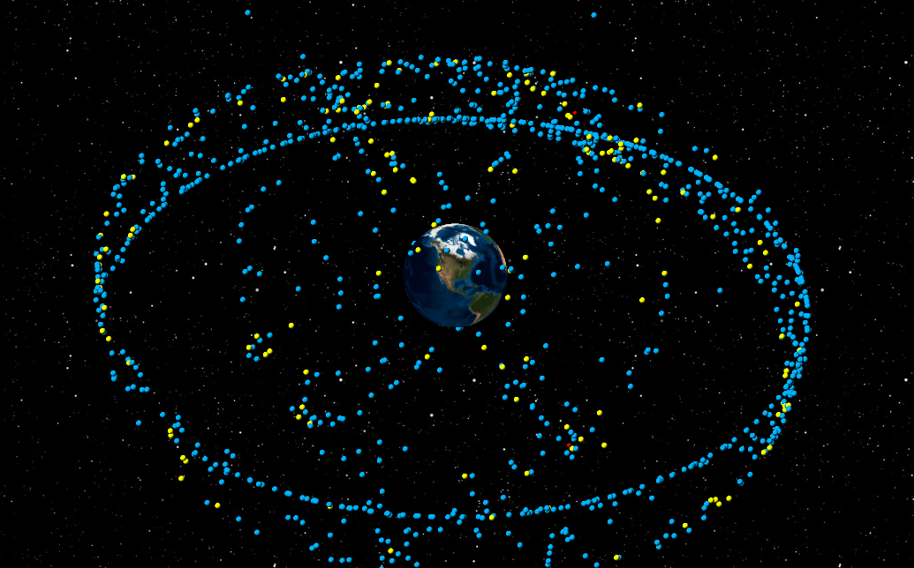

SciSys
Demo
Toggle navigation
2
You have 2 warnings
2 satellites have potential to go out of accepted parameters
View all
1
You have 1 critical issues
FALCON 9 R/B (2010-066K) Power level
20%
20% Complete
View in detail
Orbital Map
Level
Here
